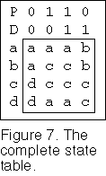

Intelligent Logic
-
Introduction
- A familiar relay circuit with memory
- The State Table
- The NAND gate circuit
- What are the problems for the synthesis process?
- An example of synthesis
- Another example of synthesis
- What has been left out?
- Conclusion
- What's next
 Introduction
Introduction
This page will show you what happens when you apply feedback in a combinatorial logic circuit. It will also show you a practical way of designing asynchronous sequential circuits. This is where digital circuits come to life. If you have read the Boolean algebra pages you should have the necessary understanding of the basic theory of combinatorial circuits to read this page.
We will see what happens when you apply feedback in a combinatorial digital circuit. By feedback is meant that one or more of the combinatorial outputs of the circuit will become inputs to the same circuit. An essential requirement for this to be effective is to have adequate amplification or gain in the feedback path. For example if you had a combinatorial circuit consisting of mechanical switches you would need to connect each output to be fed back to a relay device and use a contact on the relay for the feedback signal. Without the relay the signal fed back would short circuit the combinatorial part of the circuit. The relay provides the necessary isolation and amplification. If the combinatorial circuit is constructed from integrated circuit gate circuits, the necessary amplification would already be built in and additional isolation would not be required. The amplification fully reconstitutes the logic levels in the circuit to enable it to function correctly.
This page will demonstrate that the effect of the feedback in the circuit is to create memory in the circuit. Memory plus logic decision making circuitry introduces the basic requirements for intelligence in a circuit. The circuit will then be able to make decisions based on the sequence or past history of the inputs to the circuit and perform the required action. I take the ability to make decisions based on external conditions and respond appropriately to be the basis of intelligence. Hence the basic requirement to create an intelligent circuit can be provided entirely by combinatorial logic circuitry together with the provision of amplification or gain in the circuit.
A different approach to asynchronous circuit development has been taken by others who are interested in large scale applications of asynchronous circuits. We will only look at simple circuits on this page. The emphasis in this page is on the demonstration of how memory appears in logic circuits and how these circuits can be synthesised.
This page will show you a systematic and relatively straight forward method of synthesising these circuits, suitable for use with paper and pencil. The resulting circuits are categorised as asynchronous sequential circuits. We can derive this method with little more than the basic theory provided in the Boolean algebra pages but with the benefit of hindsight. The subject of this page is a logical progression from first developing the concepts of combinatorial logic circuit design. Beyond this subject is the development of design procedures for synchronous circuits but that will have to wait for another day.
A familiar relay circuit with memory
We will start by looking at a familiar relay circuit that we can easily describe and analyse. Figure 1 shows a latching relay circuit. The relay is energised when the switch S is closed. The relay remains energised through the normally closed switch R and contact Y on the relay after switch S is released. This is the feedback path. The relay can be de-energised by opening switch R.
We can write an equation for the relay circuit by noting that there are two paths from the power supply to the relay. The convention is that contacts shown as open represent logic true variables and contacts shown as closed represent logic false variables, indicated by a prime after the variable. The resulting equation for the relay circuit is:
| Y = S + R’Y |
In this equation S is the set term and R’Y is called the holding term. Y is called the state variable for the circuit since it represents the state of the circuit. S and R are called the input variables for the circuit. Note the form of this equation: On the right hand side of the equation there is a term that does not include the state variable, that we called the set term and there is a term on the right hand side of the equation that does include the state variable that we called the holding term. You will see as we go along that the form of this equation is characteristic of the equations of all the state variables that appear in this type of sequential circuit.
The state variable Y in the holding term on the right hand side of the equation shows the appearance of feedback in a combinatorial circuit. This gives the circuit its memory function.
The State Table
Next we will draw a K-map of the relay circuit equation. We will draw up the K-map in a particular way. We will place the state variable on the left hand side of the K-map and we will place the input variables along the top of the K-map.
You can see the result in Figure 2a. In Figure 2b the 0s and 1s in the body of the K-map and for the state variable in Figure 2a have been replaced with the letters a and b respectively. Figure 2b is called the state table for the relay circuit. The significance of this is that the letters in the body of the table represent the excitation conditions of the relay. In other words these are the next states of the state variable on the left when an input variable causes a change of state. You can follow the behaviour of the circuit from the state table.
The accepted terminology for this kind of concept is to call it a state machine. A terminology probably inspired by Charles Babbage’s original Analytical Engine in the 1830s. The output from the state machine is shown on the right hand side of the state table. This will be seen in the example state tables.
Consider the state table in Figure 2b. Each letter in the state table represents a state of the circuit. The state at aS’R’=a is called the rest state for the circuit and is a stable state. The rest state need not always be at this position in the table. It is preferable that the rest state be the state that the circuit powers up in on power being applied to the circuit. If R remains unenergised and S is switched on then the circuit will be in state aSR’=b. This is called a transitional state, since it indicates that the circuit will immediately move to state bSR’. When the circuit has moved to state b, the circuit will be in a stable state and will remain in this state after S has been turned off. The relay will remain latched until switch R is opened. The circuit will then be in the transitional state bS’R=a and will immediately move back to the stable state aS’R. The relay will remain unenergised when switch R closes again.
The reason for going to the trouble of replacing the 0s and 1s with the letters a and b in the state table is that the process remains applicable if there is more than one state variable. Also letters are conducive to generalisation. There is nothing to prevent the process being reversed. So at this point we already have a viable mechanism for the synthesis of state machines, we simply work the whole process backwards, starting with the desired state table.
Of course when we want to synthesise new circuits, there are some problems that we will have to look at shortly, that we need to take into account. If we are not careful there are failure mechanisms that can cause the circuit to be unreliable or even malfunction. You will see how the process works when we do a worked example.
The NAND gate circuit
Now that we have the equation for the relay circuit, we can use it to develop a gate circuit that will function in the same way as the relay circuit. The algebra remains valid independent of the method of implementation. It is convenient to do this using mainly NAND gates. The relay equation can be rearranged into NAND form by using DeMorgan’s theorem twice as shown in this equation:
| Y = S + R’Y | |
| = (S’(R’Y)’)’ |
In Figure 3a the inner parenthesis of the NAND form equation gives the output of NAND2 as (R’Y)’. When this is applied to the second input of NAND1 the full expression gives the output as Y. NAND2 is the holding term for the circuit. When analysing this type of circuit we start with whichever gate we know all the inputs to, work out the output for this gate and then we can work out the outputs of any other gate that we then know all its inputs to and so on.
We have derived something that looks like a flip flop. However, it is not quite a flip flop because the output of NAND2 is not Y’, it is actually R+Y'. If S’ and R’ are both low at the same time then both NAND gate outputs will be high at the same time, which is not true flip flop behaviour. If one or the other or both of R’ and S’ are high at all times, the outputs of the NAND gates will have opposite values and NAND2 can then be used as Y’. The DeMorgan’s of this requires that if the AND of the signals on R and S is equal to logic 0 we can use the output of NAND2 as Y’. We will use this result in the worked example. This circuit is sometimes called a NAND latch.
We will need Figure3b again later since this circuit can be made to form the basis of all the state variable circuits in a state machine and provides a quick way to draw their circuits.
What are the problems for the synthesis process?
1) The first consideration is that we should always ensure that in every transitional change of state only one state variable changes state. This will ensure that the new state is reached without ambiguity. We will ensure this by arranging that the values of the state variables in successive rows of the state table are assigned according to the Gray code. We will then ensure that successive state changes follow the symmetries in the Gray code. Figure 4a illustrates what is required. Figure 4a shows a state table with two state variables Y1 and Y2 with successive rows assigned according to the Gray code. The relay circuit state table shown in Figure 2 has only one variable so there is no problem for that circuit.
2) However, there are times when we would like two state variables to change state following a particular change in the input variables. In this case there is a possibility of a race taking place if one of the state variables changes state more quickly than the other. A solution is to make all the states of the two state variables lead to the same final state. In Figure 4b suppose input variable P changes state from 0 to 1, followed by input variable Q changing state from 0 to 1 whilst P remains a 1. The state machine will then come to rest in stable state cPQ after traversing the intermediate state bPQ’.
If P is now returned to 0, the state machine will either end up in state bP’Q or state dP’Q instead of the intended state aP’Q depending on which state variable changes state more quickly. On the other hand if Q returned to a 0 followed by P returning to a 0 from the state cPQ then the state machine would return to its rest state without ambiguity since all states with PQ = 0 lead to the same rest state at a.
3) If all the states in a column of states in a state table are transitional states such that each state leads to a different one of the others in a loop and the successive states conform to the requirement that only one state variable changes state at each state change, the state machine will continuously cycle through these states when in this column. It is permissible for one transitional state to be followed immediately by another transitional state followed in turn by a stable state (with the above proviso). This is another permissible way of moving to a state where two state variables are required to change state. However, this is a less desirable way to reach the desired stable state since two transitions will take longer to execute and there is also a possibility of a so-called essential hazard.
4) In general if there are n state variables there will be 2N possible states in the state machine. In this case it may not be necessary for all the states to be used. The unused states may be used as don’t care conditions, to simplify the circuit. However, it is then possible for the unused states to be stable states in such a way that a power surge or severe electrical disturbance, for example, could unexpectedly force the state machine into one of the don’t care state. If you have used unused states as don’t care conditions you should make sure that you have not created any lockup states amongst the don’t care states. You do this by reconstructing the full state table with all don’t care states replaced with their final logic values and making sure that all don’t care states lead to used states. This will allow the state machine to re-establish correct operation in subsequent use.
5) There are so called static hazard conditions that need to be addressed. A static 1 hazard can occur if there is no overlap in the mapping for a function when input variables change values. This may result in a logic function that momentarily takes the logic circuit to a logic 0 condition when it should have remained a logic 1. Similarly there is a static zero hazard that can momentarily take a circuit to a logic 1 condition when it should have remained a logic 0. Delays through inverters are a frequent source of these hazards. There is also a so called dynamic or oscillation hazard where a logic function will momentarily change back to its original value whilst changing to a new value. This type of hazard can occur in multi level logic structures. We will encounter some of these hazards and see how to deal with them when we do a fully worked example of synthesis.
6) If an input variable is a physical switch contact we need to consider the effect of contact bounce. The activation of a switch contact can introduce the effect of multiple very short contacts before stabilising into a hard contact. These short contacts are readily responded to by subsequent logic gate circuitry. One way of dealing with this will be seen later.
7) After constructing the state table the values of the letters representing the states are assigned the assumed Gray code values. The resulting table is then effectively a K-map with each of the maps of the individual state variables combined together. The equations for the individual state variables can then be derived by the usual method of using a K-map. The procedure is simplified by splitting the resulting K-maps into individual K-maps for each state variable.
After dealing with these considerations we can finally draw a circuit from the equations that are derived and implement the finished design.
An example of synthesis
Enough has been said now to give a worked example to show how the above considerations can be applied to synthesise a state machine. The example is chosen to illustrate the design procedure. In this example lower case letters will be used for states and upper case letters for input variables.
The example will be the design of a basic synchronous D-type flip flop. The D flip flop has a data input, labelled D and a clock input, labelled P. The clock input signal is simply a square wave signal. At each positive going transition of the clock signal the signal on the data input is latched into the flip flop and appears on the output Q. The output of the flip flop does not change at any other time. This type of flip flop has the function of producing a one clock pulse delay for the signal on its input, hence the designation D-type Flip flop. We will ignore preset, clear and other possible features that a complete D flip flop might have. Also we will not discuss the design procedures for synchronous D-type flip flops here.
The process of filling in the state table is started in Figure 5 which shows the initial steps in two stages. The output from the circuit in states a and b will be logic 0, whilst the output in states c and d will be logic 1 as seen on the right of the state table.
The rest state for the circuit is at aP’D’. The strategy chosen is that whilst the clock pulse P remains at logic 0, the circuit will be in state a if D=0 and will be in state b if D=1. Then when the clock pulse P changes to a logic 1, the circuit will remain in state a if D=0 and will switch to state c if D=1. The output of the flip flop will then change to logic 1 as required. Note that we are following the Gray code symmetries in choosing state changes. You should follow through the transitional and stable states to see how the changes in state take place.
When the circuit has moved to state c the same strategy will be used again. Whilst the clock pulse P is at logic 0, the circuit will stay in state c whilst D=1 and will stay in state d whilst D=0. Then when the clock pulse P changes to logic 1 again the circuit will remain in state c if D=1 and will switch back to state a if D=0. The output of the circuit will be preserved or switched as required during this process. If you have been following this discussion on Figure 5 you will have seen how the states are filled in on the state table to meet the required state changes.
At this stage in the process, there are two states in the state table that have not been filled in. We could argue about the possibility that both D and P could change state at exactly the same time and worry about what should happen then but we will take these states to be don’t care states and see how the circuit works out taking advantage of these states.
For now, we have done the heavy thinking part of the design process and the next part is routine. We will now replace the state variables with the Gray code values and write down the circuit equations from the resulting K-maps. This process is shown in Figure 6 where the combined map has been split into two separate maps. The left hand sides of each column represent state variable y2 and the right hand sides of each column represent state variable y1. The maps are labelled below the maps with the names of the relevant state variables.
Mapping of the state variables is shown in Figure 6. Note that I have deliberately mapped the redundant terms y1D in the equation for y1 and the term y1y2 in the equation for y2. This is required to prevent hazard conditions that can exist when P changes state in these mappings. There is a slight chance that a logic 1 hazard could occur that might cause the flip flop to drop its output. Inevitably an inverter is required in this type of circuit and the delay through the inverter is the source of a problem. By overlapping the mappings as indicated, this type of circuit hazard can be avoided.
The complete state table is filled in from the circuit equations and is shown in Figure 7. You can see that if P and D change state together, then at the state bD’P the flip flop will be returned to state c and at the state dDP the circuit will be returned to state a. This looks like a satisfactory outcome.
What would happen if D and P actually did change state at the same moment? It is a property of all synchronous flip flops that there is a short period of time immediately prior to the active edge of the clock pulse, called the setup time TSU, during which a change of state in the data input variable will cause the circuit to malfunction. For some synchronous flip flops there is also a short period of time immediately after the active clock edge, called the hold time TH, where the flip flop will fail. Ideally TH should be zero. The flip flop that has been designed here is good in this respect. In today's synchronous flip flops TSU is very short compared with a full clock period, which helps to alleviate this problem. If the inputs to the flip flop come from other synchronous flip flops a more significant problem is skew in the application of the clock signal to each of the flip flops. Synchronous flip flops have their own design procedures which are better dealt with separately.
I will show you a quick way to draw the circuit diagram from these equations. Have a look at the circuit in Figure 3b. In the equation for y2 the set term is y1P which together with the inverter shown in the figure can be implemented with a NAND gate. The holding term for y2 is (y1+P’). In figure 3b this is shown as R’, so the inverter shown in the figure cancels and we just need an OR gate for this term. Therefore we can immediately draw the circuit for y2 as seen in Figure 8. The same considerations give the circuit for y1.
 We should also check to see if the output
of the lower NAND gate in the output stage can be used as Q’.
From Figure 6, S=y1P
and R=(y1+P’)’=y1’P, therefore RS = y1Py1’P = 0.
Therefore we are permitted to use the second NAND gate in the circuit for y2 as Q’.
We should also check to see if the output
of the lower NAND gate in the output stage can be used as Q’.
From Figure 6, S=y1P
and R=(y1+P’)’=y1’P, therefore RS = y1Py1’P = 0.
Therefore we are permitted to use the second NAND gate in the circuit for y2 as Q’.
As you can see in Figure 8 the complete circuit is a master/slave synchronous D-type flip flop. As a point of interest all synchronous circuits can be constructed with only D-type flip flops. The majority of the computers in use today are constructed with synchronous flip flops because the design of synchronous circuitry is well formalised and has been computerised whereas asynchronous circuitry design has been more difficult to computerise, due partly to the possible presence of hazards. Also the work involved in the design process doubles for each added variable.
Another example of synthesis
In this example there are two switches labelled P and Q. If P and Q were simply connected in series with a LED and a power supply, it wouldn’t matter which switch was turned on first. When both switches are turned on the LED will light.
However, in this example there will be two LEDs as well as the two switches. If P is turned on first and held and then Q is turned on, the green LED will be turned on. Whilst if Q is turned on first and held and then P is turned on, then the red LED will be turned on. Whichever LED is on, will stay on until both switches are released. The circuit in this example remembers which switch is turned on first and turns on the required LED when the second switch is turned on.
 Rather than give you a complete description of how the circuit is
designed and how it works, I will simply give you the design details in Figure 9. In
carrying out this design I did not actually need to figure out how the circuit works on a
gate by gate basis. I have since built the circuit with real components as a demonstration
that the circuit works as intended. The description of the preceding example should be
enough to help you work through the design process for this example. You might like to
check that we can use both outputs of the flip flops.
Rather than give you a complete description of how the circuit is
designed and how it works, I will simply give you the design details in Figure 9. In
carrying out this design I did not actually need to figure out how the circuit works on a
gate by gate basis. I have since built the circuit with real components as a demonstration
that the circuit works as intended. The description of the preceding example should be
enough to help you work through the design process for this example. You might like to
check that we can use both outputs of the flip flops.
In this example, the input variables may be physical switch contacts subject to contact bounce. Here, the states have been assigned in such a way that if an input changes state and then changes back again, it either returns to the state it originally came from or is locked in the final intended state. For example if Q is turned on first the circuit moves to state d and if Q bounces off, the circuit returns to state a. When Q finishes bouncing the circuit will end up in state d as required. On the other hand if P is now turned on, the circuit will lock into state c regardless of any bounce in the P contact. The problem of contact bounce is therefore taken into account.
What has been left out?
All the considerations and techniques that have been proposed for the synthesis of asynchronous circuits are not covered here. Hopefully enough has been said to get you started with these circuits. You should be able to design your own small projects and have fun experimenting with them with one of the families of small scale integrated circuits that are available in hobby shops. To become more expert at this you might consider the following points that are not covered fully here
1) There are two additional hazard conditions that are not discussed in detail here. These are the essential hazards and metastable conditions. Essential hazards can result from the delay through an inverter circuit which can momentarily produce a situation where a pair of states can be unintentionally skipped where there are multiple successive transitional state changes.
A metastable condition can result if two input variables to a state machine both change state too close together. The output of the state variable can then be forced into an oscillatory or unstable condition that can persist for some time. This effect is known as metastability. In practice the oscillatory condition will damp out after a short time but unless a delay is allowed for the oscillation to die out, the circuit could miss a desired change of state or otherwise malfunction. This is often the cause of very infrequent and apparently inexplicable momentary failures in a circuit which has not made due allowance for the effect.
2) Mention should be made of the Mealy and Moore methods of drawing up the state machine. G. H. Mealy and E. F. Moore followed the original work of D. A. Huffman in presenting methods of synthesis for the implementation of state machines in relay circuits. Mealy showed how Huffman’s original procedure could be simplified. In Mealy’s method output variables for the state machine could be a function of both the input variables and the state variables.
Since changes of state of the state variables will be delayed with respect to changes of signal level in the input variables, there are possibilities of glitches appearing in the output variables. Moore showed that an equivalent state machine could be constructed in which the output variables depended only on the state variables. Circuits of this type would therefore be less prone to have glitches in their output signals. The example circuits are Moore type state machines.
3) There are methods of drawing graphical representations of the state table. The diagrams of one of these methods are called state diagrams. There is a one to one correspondence between the state diagram and the state table. State diagrams can be drawn for the Moore and Mealy state machines. Another type of diagram is the Algorithmic State Machine which represents the flow of the state machine with special symbols to represent the decision elements and actions of the state machine. These diagrammatic methods are very useful for representing and visualising many types of state machines and are a convenient way of documenting a state machine.
4) State machines can be implemented directly in digital hardware or they can be implemented in software in a microprocessor or microcontroller. For use in digital hardware, this article has shown the basics of a systematic approach to deriving the circuit equations for the circuitry of state variables in the state machine. For use in a microprocessor the state machine might be implemented in an interrupt routine or polling routine in which each pass through the routine would perform a series of tests and perform a specific required action depending on the previous state of the routine. The state of the routine would be maintained in a memory register. Hardware and software implementations of state machines are simply alternative ways of achieving the same end.
5) Some books that describe synthesis techniques for this type of circuit start by not assuming any values for the state variables and deal with this nearer the end. These methods include techniques for selecting the best assignment for variables for the states. These methods require somewhat more work to carry out than the method described here.
We have assigned states according to the Gray code from the start. Even when this is done there are frequently several ways that the state table can be drawn up. There are often advantages and disadvantages for the different ways that are possible. Before a design is complete you need to consider some of the alternatives and make a choice.
6) There are also techniques for examining a state table and combining unnecessarily duplicated states. An initial attempt at drawing up the state table may not be the best or most compact way of setting it up. Eliminating unnecessary states may both reduce the amount of circuitry needed and make the circuit more reliable at the same time.
There are plenty more designs that you can do with only one, two or three state variables. For example, there are various latch, counter and pulse synchronising circuits that you can design. With a bit of imagination you should be able to think of a few more interesting applications that you can try out yourself.
Conclusion
This page has presented a method of designing asynchronous digital circuits that can be constructed from basic gate circuits. The method is suitable for paper and pencil for up to three or four state variables.
In describing the design process the point is made that you start the design by drawing up a state table that corresponds with the circuit and in which you can take into account the various race and hazard conditions that could cause problems in the finished circuit. If you started by drawing up a state diagram you would translate this into a state table before continuing the design process. Deriving the circuit diagram from the state table in a preferred type of logic gate circuits is routine. NAND gates are used in the demonstration circuits but you could just as well use any other type of gate circuit including AND-OR gates or even threshold gates if they have amplification to maintain logic levels.
Perhaps a more significant point is the demonstration that memory appears naturally when there is feedback in a combinatorial logic system and the combination of the logic and the memory in the system leads to the beginnings of intelligence in a system. To demonstrate the concept we have looked at two simple examples which show how the concept of logic plus memory works to produce an asynchronous digital circuit with a degree of intelligence.
At any rate have fun creating your own circuits that exhibit a degree of intelligence.
What's next
The relay puzzle on the next page demonstrates the analysis of a switching circuit that behaves in a continuous state of oscillation. Many of the characteristics of the behaviour of this kind of circuit can be seen.
Boolean Algebra - Page 2 OR Top for navigation menu OR Relay Puzzle page
(Copyright) David N. Warren-Smith, CPENG
Digital Logic Systems, South Australia
dwsmith@senet.com.auModifications: 12 February 2002, 4 March 2002